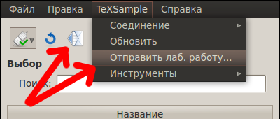
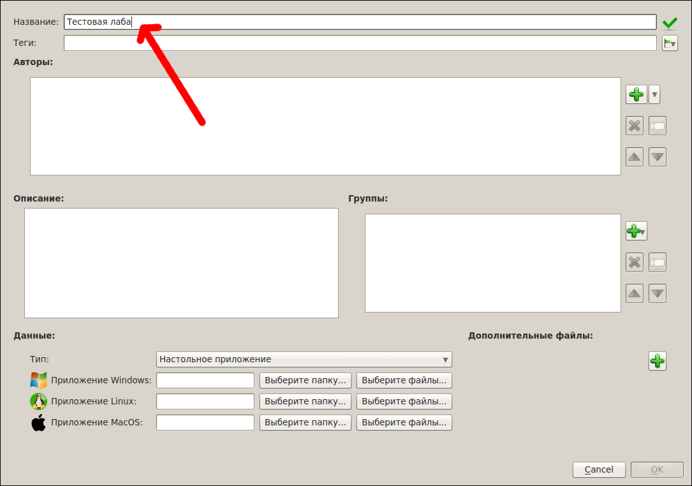
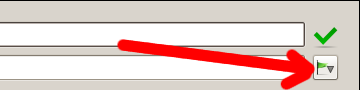
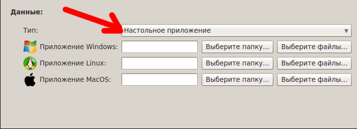

[Назад: 2.1. Поиск и заргузка лабораторных работ]
[Далее: 2.3. Администрирование]
Отправка лабораторных работ
Чтобы добавить лабораторную работу (отправить ее на сервер), необходимо иметь уровень доступа не ниже модератора.
Отправка лабораторной работы - процесс достаточно простой, но ответственный: нужно правильно выбрать отправляемые файлы
и добавить хорошее описание, а также снабдить работу как можно более обширным набором меток (ключевых слов), чтобы в
дальнейшем пользователям (студентам) проще было ее найти.
Начало
Чтобы приступить к оформлению лабораторной работы, необходимо открыть диалог отправки. Сделать это можно двумя
способами, как показано на рисунке:

Нажимте кнопку с изображением конверта, либо выберите пункт "Отправить лаб. работу" меню
"TeXSample" (показаны красными стрелками).
Заполнение формы отправки
В появившейся форме отправки (см. ниже на рисунке) для начала укажите название лабораторной работы. Всегда старайтесь
придумать как можно более понятное название.

Укажите также теги (метки, ключевые слова), по которым будет легко найти вашу лабораторную работу. Теги указываются
через запятую (можно также ставить после запятой пробел). Теги, использованные при отправке предыдущей работы, можно
быстро вставить снова, воспользовавшись кнопкой с изображением зеленого флажка (показана красной стрелкой на рисунке
ниже).

Не забудьте выбрать правильный тип работы. Пример показан на рисунке:

При желании можно указать авторов (для этого справа от списка авторов нужно нажать кнопку с изображением зеленого знака
"плюс"). Авторов можно удалять и перемещать при помощи соответствующих кнопок справа от списка. Также их можно
редактировать при помощи двойного щелчак или кнопки Enter.
Опишите вашу лаобраторную работу, воспользовавшись полем "Комментарий". Здесь также можно указать имеющиеся
проблемы и недочеты, добавить какие-либо указания.
Не забудьте выбрать, для каких групп пользователей будет доступна ваша работа. Добавление групп аналогично добавлению
авторов.
Наконец, нужно выбрать, что отправлять. Можно указать папку или список файлов. В первом случае будут выбраны все файлы
в указанной папке. Щелкните соответствующую кнопку и выберите файлы/папку. После этого появится диалог, предлагающий
выбрать из списка файлов тот, который является главным (то есть тот, который бы вы щелкали при запуске приложения).
Выберите этот файл из списка и нажмите ОК.
Если ваша работа представляет собой ссылку на внешний ресурс, просто укажите эту ссылку (например,
"my.site.com/labs/lab_2.html").
Убедитесь, что правильно заполнили информацию о лабораторной работе и выбрали нужные файлы, после чего нажмите кнопку
"ОК".
Редактирование лабораторных работ
Чтобы отредактировать лабораторную работу, выберите ее в списке, затем щелкните правой кнопкой и выберите
соответствующий пункт. По умолчанию редактируется только информация (файлы не изменяются). Чтобы изменить файлы,
поставьте галочку Редактировать данные и укажите новые данные.
[Назад: 2.1. Поиск и заргузка лабораторных работ]
[Далее: 2.3. Администрирование]